|
Ritorna all'indice delle parrocchie
Il numero abbinato ad ogni famiglia indica la relativa posizione nello Stato delle Anime
1 - Camillo Fabbri . Paroco di questa Parrocchia
2 - Petrini Girolamo - lavoratore di terre a mezzaria
3 - Lippi Giovanni - lavoratore di terre a mezzaria
4 - Fontani Giuseppe - lavoratore di terre a mezzaria
5 - Palassini Pietro - lavoratore di terre a mezzaria
6 - Muzzi Bennardino - lavoratore di terre a mezzaria - 8
8 - Vanni Francesco - va a opera ne terreni - 1
9 - Nannini Francesco - lavoratore di terre a mezzaria
10 - Fracassi Bartolommeo - lavoratore di terre a mezzaria
11 - Calusi Tommaso - vedovo - il figlio Giuseppe attende al campo a mezzaria - 4
12 - Mancini Zaverio - fa la professione di mugnaio - 8
13 - Gorelli Giuseppe - fa l'arte di mugnaio
14 - Nencini Francesco - lavoratore di terre a mezzaria
15 - Ceccanti Iacinto - lavoratore di terre a mezzaria
16 - Centini carlo - lavoratore di terre a mezzaria
18 - Giannelli Bernardino - lavoratore di terre a mezzaria
19 - Ceccanti Giovanni - lavoratore di terre a mezzaria - 11
20 - Pianigiani Virgilio - lavoratore di terre a mezzaria
21 - Ceccanti Domenico - lavoratore di terre a mezzaria
22 - Bianciardi Giuseppe - lavoratore di terre a mezzaria
23 - Bianciardi Bartolommeo - lavoratore di terre a mezzaria
Comunità di S. Teodoro
2 - Cennini Giovanni - lavoratore di terre a mezzaria
3 - Cennini Giuseppe - lavoratore di terre a mezzaria
4 - Muzzi Antonio - lavoratore di terre a mezzaria - 7
6 - Bruschi Domenico - lavoratore di terreni
7 - Bartalini Giovanni - ortolano - 8
8 - Frati Santi - ortolano - 9
9 - Giannelli Giuseppe - ortolano
10 - Rogani Pietro - lavoratore di terreni
11 - Cagnarelli Domenico - lavoratore di terreni
12 - Rogani Giovanni - lavoratore di terreni e boschettiere
15 - Ricci Marco - lavoratore di terreni a mezzaria
Comunità di S. Apollinare
1 - Marrocchi Bernardino - lavoratore di terreni a mezzaria
2 - Belli Domenico - lavoratore di terre a mezzaria
3 - Cappanoli Antonio - lavoratore di terreni a mezzaria
4 - Carli Jacomo - lavoratore di terre a mezzaria - 11
7 - Valacchi Giuseppe - lavoratore di terre a mezzaria
8 - Giovani Domenico - lavoratore di terre a mezzaria
9 - Pavolini Francesco - lavoratore di terre a mezzaria - 6
11 - Bianciardi Bartolommeo - lavoratore di terre a mezzaria - 11
13 - Valacchi Andrea - lavoratore di terre a mezzaria
14 - Pianigiani Giuseppe - lavoratore di terre a mezzaria
15 - Angiolini Cesare - lavoratore di terreni a mezzaria
16 - Merzi Ansano - lavoratore di terreni a mezzaria
17 - Carli Margarita - vedova - fila - 3
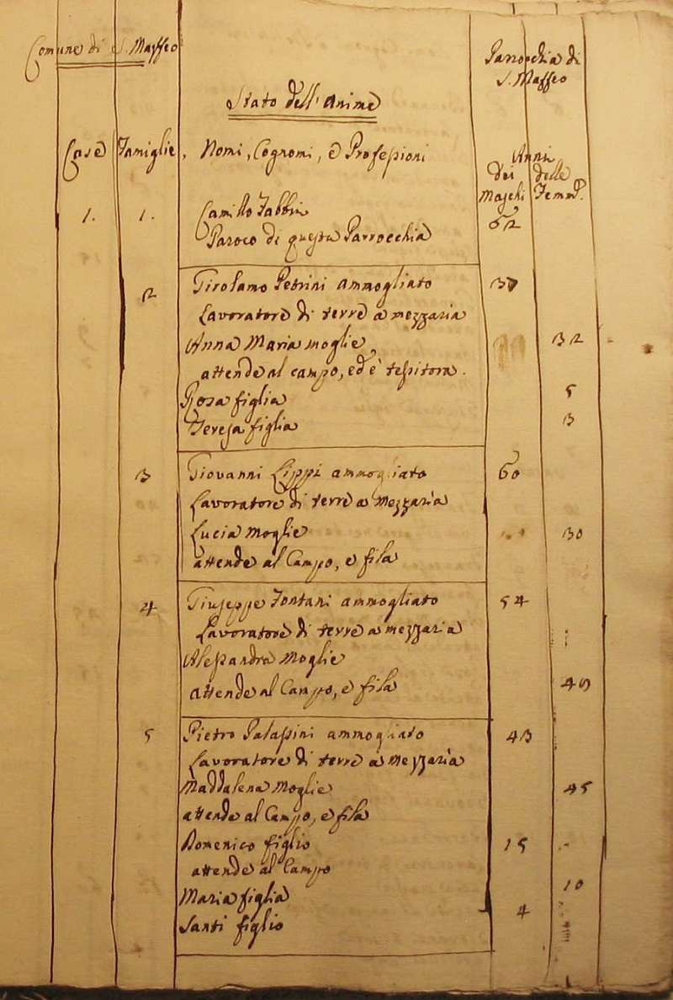
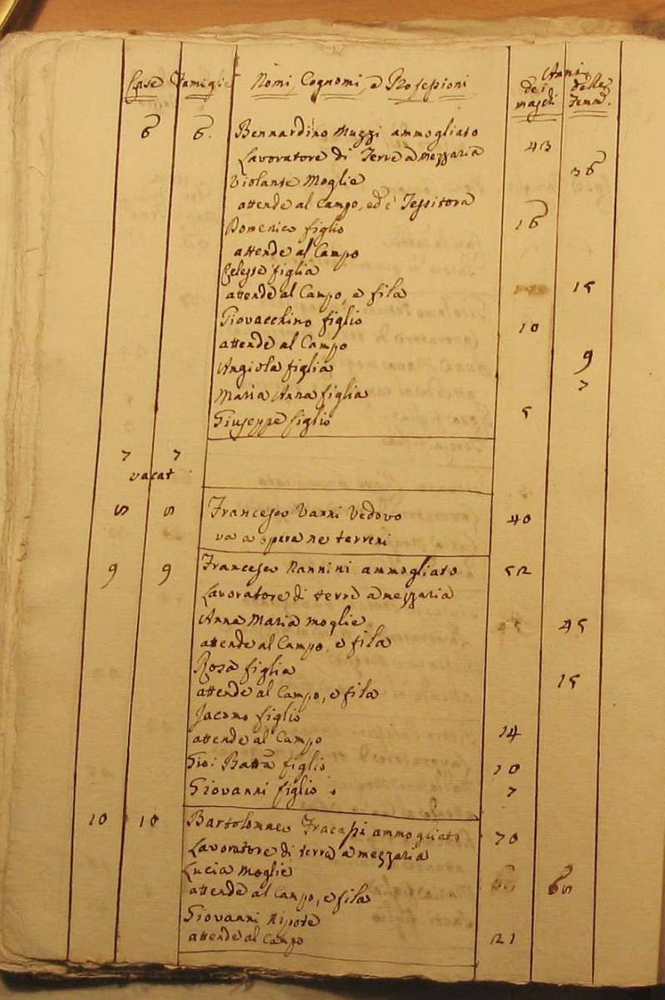
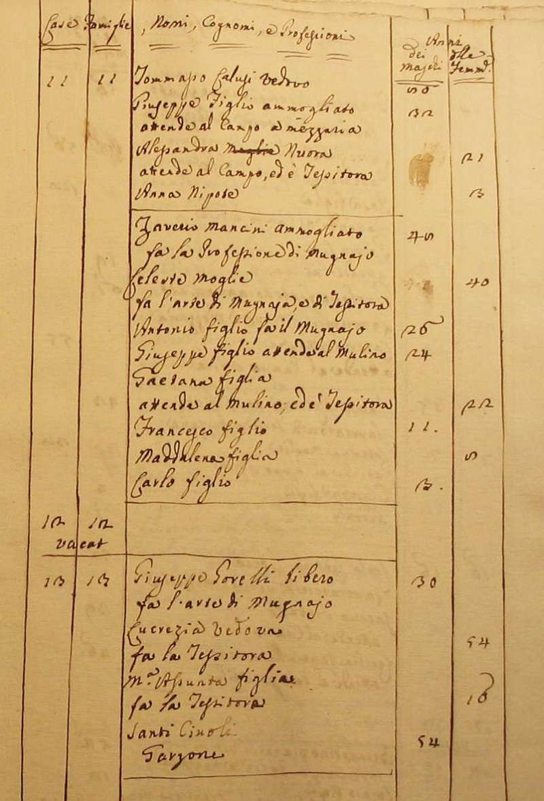
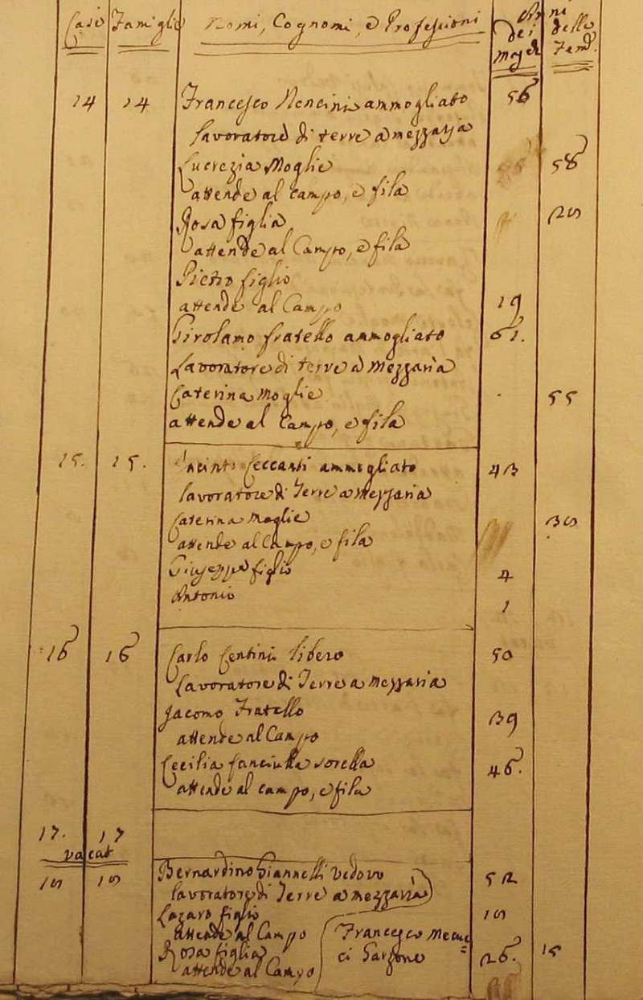
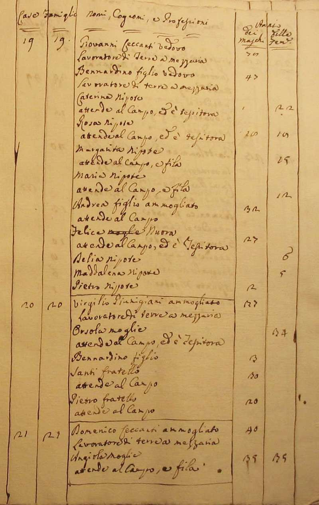
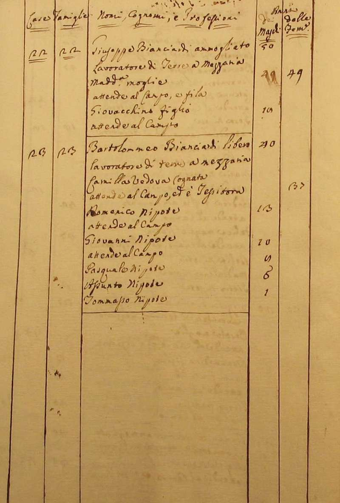
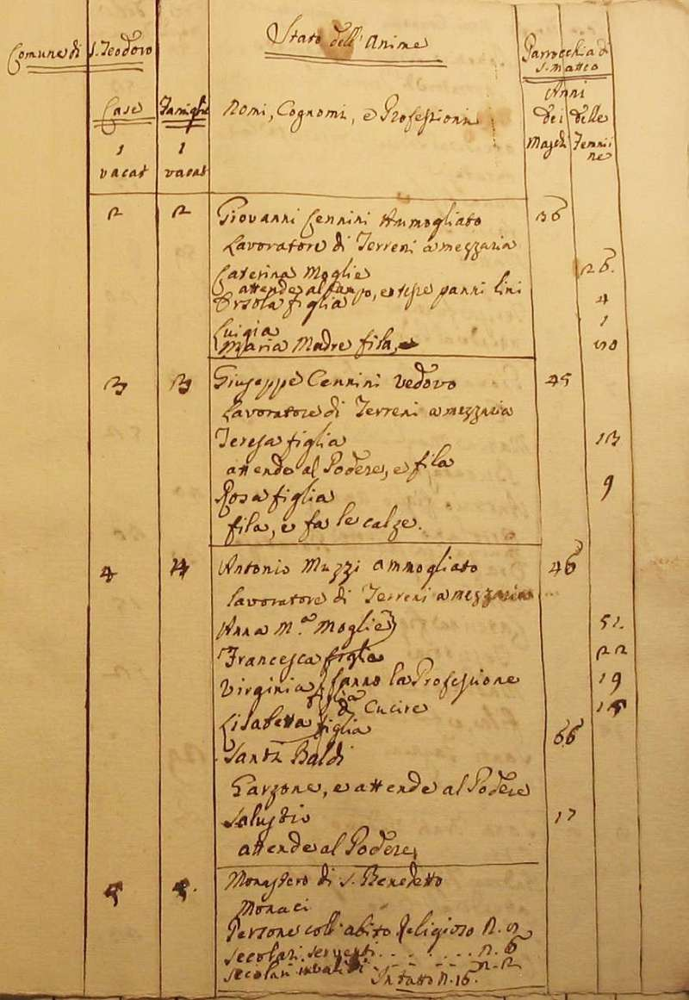
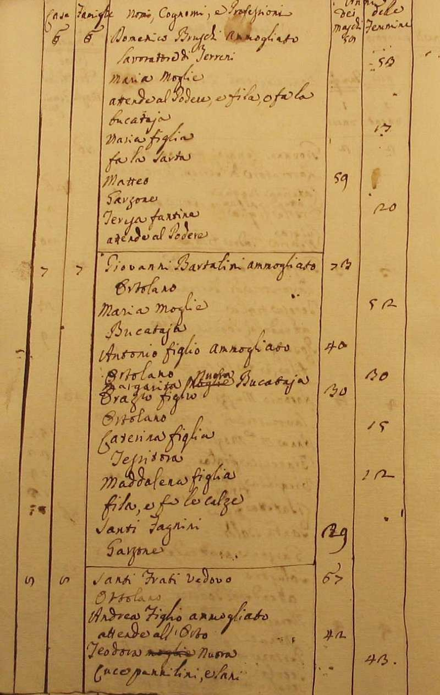
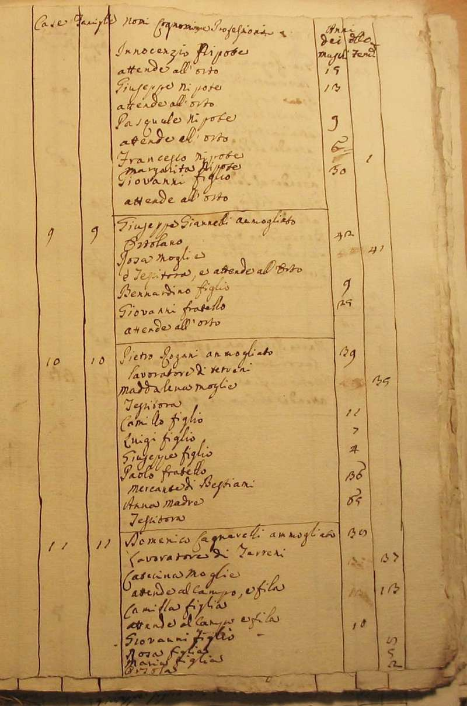
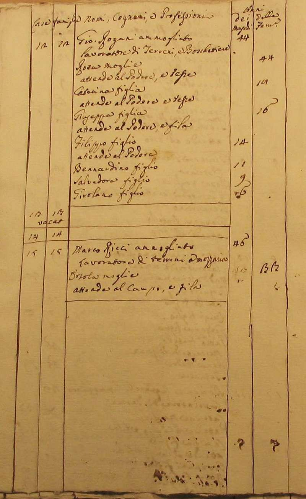
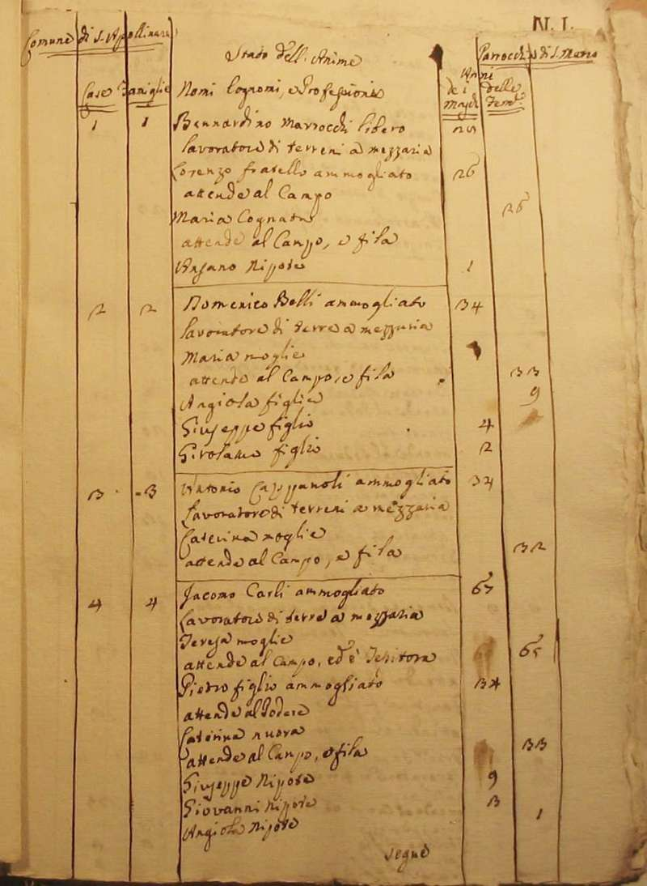
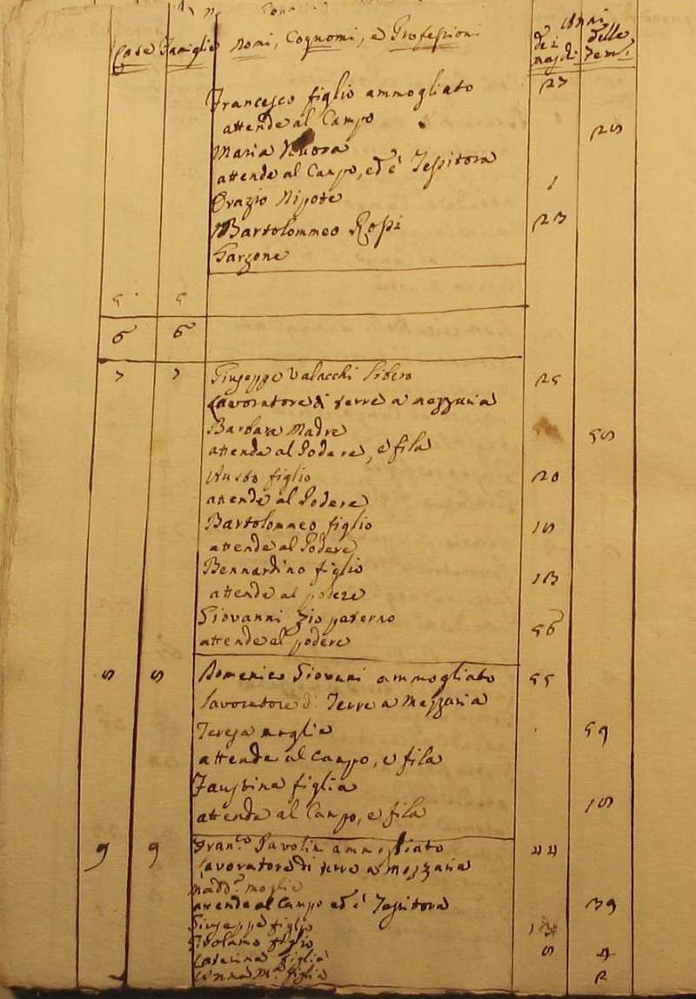
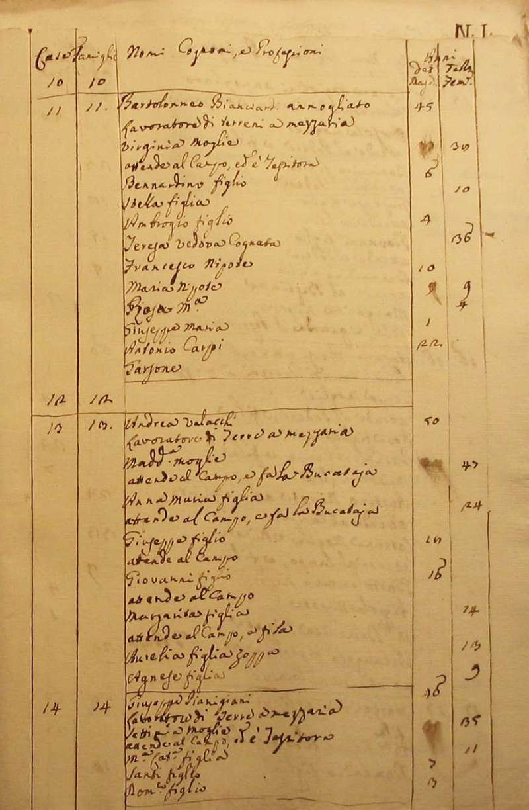
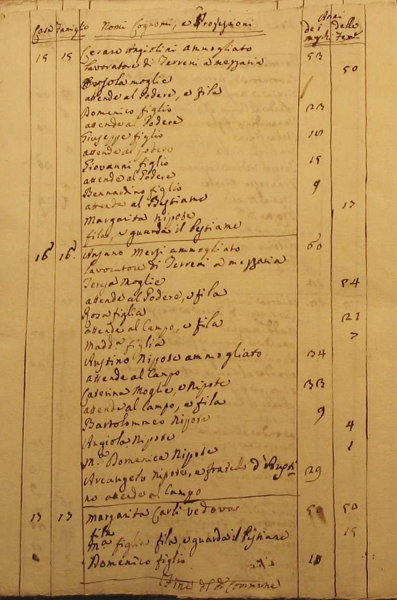
Torna ad inizio pagina
Ritorna all'indice delle parrocchie
| |

|